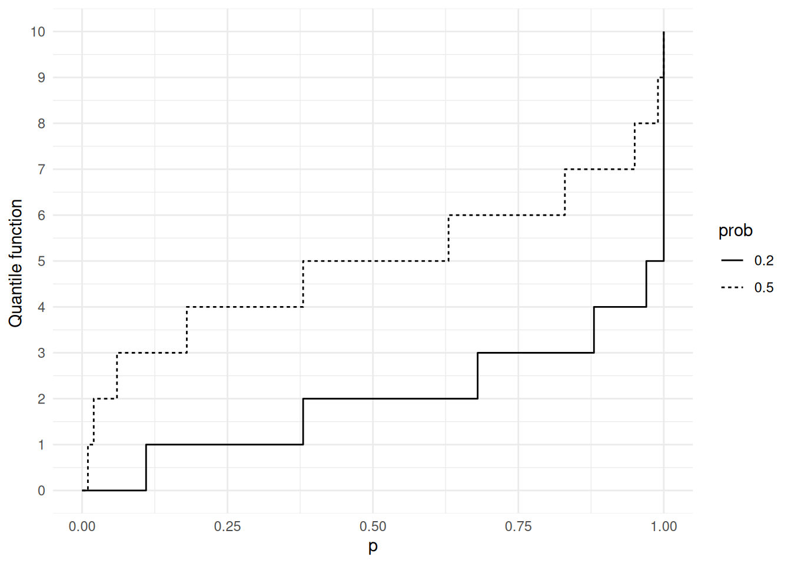
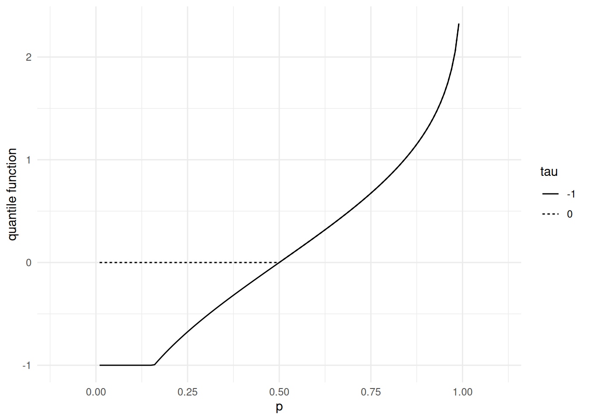
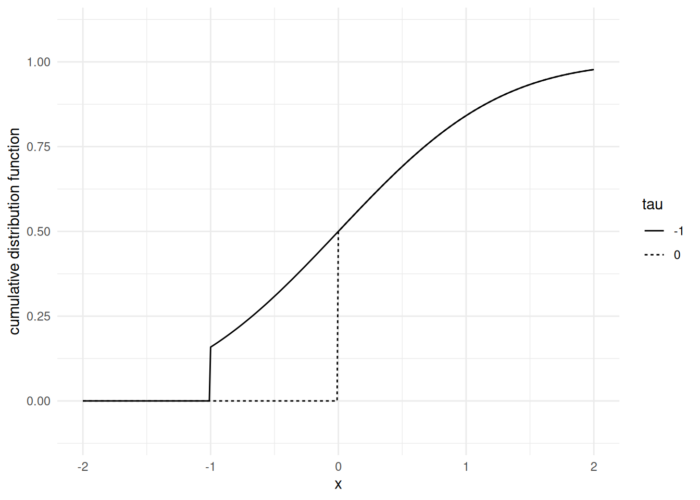
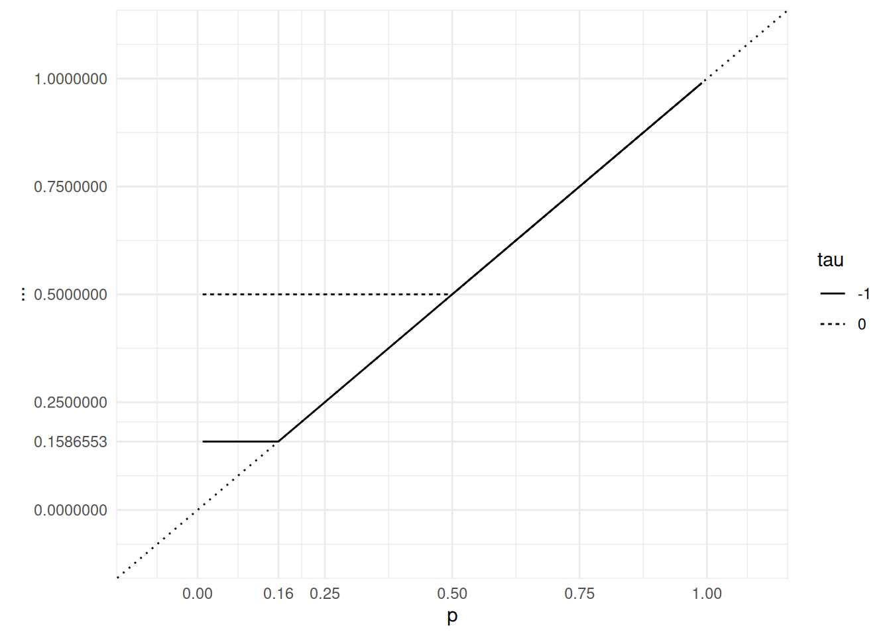
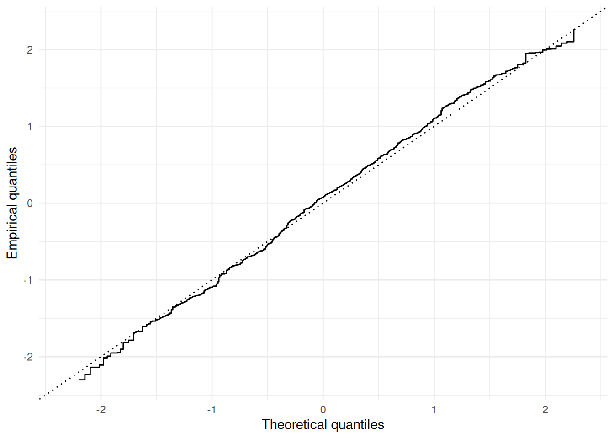

13 Fonctions quantiles
Jusqu’ici, nous avons vu plusieurs caractérisations des lois de probabilité : fonctions de répartition (FDR), transformées de Laplace pour les lois supportées sur \([0, \infty)\), fonctions caractéristiques. Cette dernière caractérisation est prisée pour son comportement vis-à-vis des sommes de variables aléatoires indépendantes.
Pour les lois univariées, le compagnon de la fonction de répartition est la fonction quantile. Elle joue un rôle important en simulation, en statistique et en théorie du risque.
Une fonction de répartition \(F\) est non négative, à valeurs dans \([0,1]\), non décroissante, continue à droite, avec limite à gauche en tout point. La fonction de répartition d’une mesure de probabilité diffuse est continue en tout point.
13.1 Définition
La fonction quantile \(F^{\leftarrow}\) est définie comme un inverse étendu de la fonction de répartition \(F\).
La fonction quantile est non décroissante et continue à gauche. L’interaction entre les fonctions quantile et de répartition est résumée dans la proposition suivante.
Preuve. D’après la définition de \(F^\leftarrow\), si \(F (x) \geq p\), alors \(F^\leftarrow (p) \leq x.\)
Pour prouver la réciproque, il suffit de vérifier que \(F \circ F^\leftarrow (p) \geq p\).
En effet, si \(x \geq F^\leftarrow (p)\), comme \(F\) est non décroissante, \(F (x) \geq F \circ F^\leftarrow (p)\). Si \(y = F^\leftarrow (p)\), par définition de \(y = F^\leftarrow (p)\), il existe une suite non croissante \((z_n)_{n \in \mathbb{N}}\) convergeant vers \(y\) telle que \(F (z_n) \geq p.\) Mais comme \(F\) est continue à droite, \(\lim_n F (z_n) = F (\lim_n z_n) = F (y).\) D’où \(F (y) \geq p\).
Nous venons de prouver les points 1. et 2.
3.) est une conséquence immédiate de 1.). Posons \(p = F (x).\) Alors \(p \leq F (x),\) et d’après 1.), cela équivaut à \(F^\leftarrow (p) \leq x,\) c’est-à-dire \(F^\leftarrow \circ F (x) \leq x.\)
4.) Pour tout \(p\) dans \(] 0, 1 [,\) l’ensemble \(\{ x : p = F (x)\}\) est non vide (théorème des valeurs intermédiaires). Posons \(y = \inf \{ x : p = F (x)\} =F^\leftarrow (p)\). D’après 1.), \(F (y) \geq p\). Maintenant, si \((z_n)_{n \in \mathbb{N}}\) est une suite croissante convergeant vers \(y\), pour tout \(n\), \(F (z_n) < p,\) et, par continuité à gauche, \(F (y) = F (\lim_n z_n) = \lim_n F (z_n) \leq p.\) D’où \(F (y) = p,\) c’est-à-dire \(F \circ F^\leftarrow (p) = p.\)
13.2 Fonctions quantiles et simulation stochastique
Preuve. \[\begin{array}{rl} P\Big\{ F^\leftarrow(U) \leq x \Big\} & = P\Big\{ U \leq F(x) \Big\} \\ & = F(x) \, . \end{array}\]
Remarque 13.1. La transformation quantile fonctionne quelles que soient les propriétés de continuité de \(F\).
La transformation quantile a de nombreuses applications. Elle peut être utilisée pour démontrer des propriétés de domination stochastique.
Exemple 13.1 Dans les Figures 13.1 jusqu’à Figure 13.4, nous illustrons les fonctions quantiles pour des lois discrètes (binomiales) et pour des lois qui ne sont ni discrètes ni continues. La fonction quantile d’une loi discrète est une fonction en escalier qui saute aux probabilités cumulées de chaque issue possible. Si une loi de probabilité est un mélange d’une loi discrète et d’une loi continue, la fonction quantile saute aux probabilités cumulées de chaque issue possible de la composante discrète.




Concluons cette section par une observation importante concernant le comportement de \(F(X)\) lorsque \(X \sim P\) avec fonction de répartition \(F\).